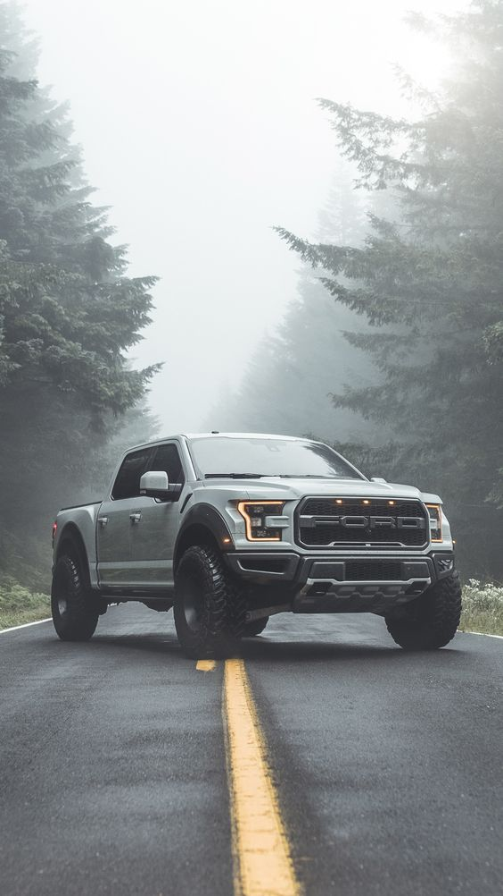
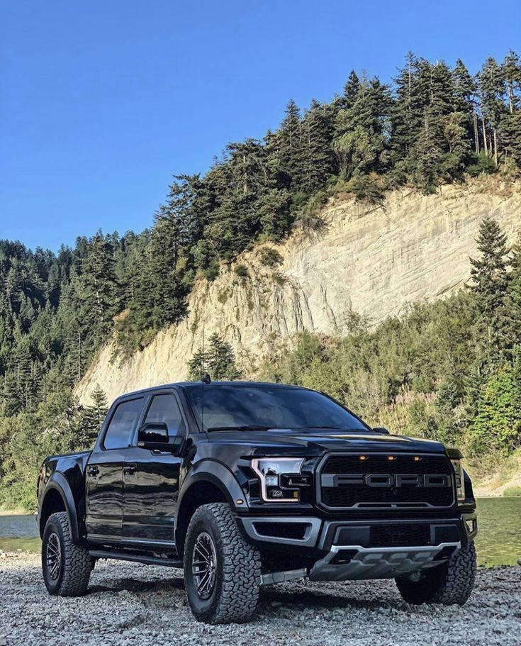

Conoce mas sobre este vehiculo!
>
La Ford Raptor 2024 es una camioneta todoterreno de alto rendimiento diseñada para enfrentar los terrenos más difíciles con facilidad. Combina potencia, tecnología avanzada y un diseño robusto.
Especificaciones de la camioneta
- Motor: 3.5L EcoBoost V6
- Potencia: 450 hp
- Torque: 510 lb-pie
- Transmisión: Automática de 10 velocidades
- Suspensión: Fox Racing Shox con amortiguadores ajustables
- Capacidad de remolque: 8,200 libras
Características Destacadas
La Ford Raptor 2024 viene equipada con las últimas innovaciones en tecnología como las que veras a continuacion:
- Sistema de infoentretenimiento SYNC 4 con pantalla táctil de 12 pulgadas
- Conectividad Apple CarPlay y Android Auto
- Asientos de cuero con calefacción y ventilación
- Sistema de sonido B&O de 18 altavoces
- Sistema de cámaras de 360 grados
- Control de descenso y modos de manejo todoterreno
Detalla a su maximo explendor esta gran maquina!

